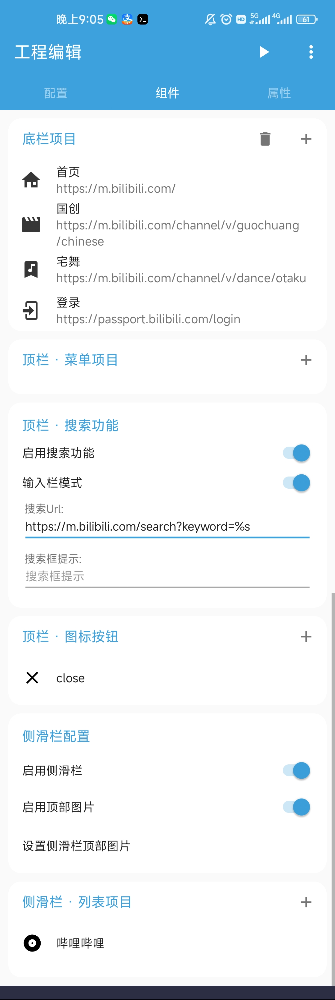

期末复习周，我把B站改造成了只有视频的专属播放器
一个大三学生在图书馆被弹幕和推荐算法烦死，花了一个下午用 FusionApp 把网页壳改造成干净观影工具的完整经历。
周五下午三点，图书馆三楼靠窗的位置
那是第十六周的周五，高数期末考定在下周一。我抱着一摞课本躲到图书馆三楼靠窗的角落，手机开着 B 站的移动网页版——本来是想放一门课的串讲视频当背景音，结果半小时过去了，一门课没听完，收藏夹里多了七个 UP 主。
算法推荐像个不知疲倦的朋友，每刷完一个视频就塞来三个更对我胃口的。弹幕开关被我反复按了四次，开了嫌吵，关了又忍不住点开看大家在说什么。最后我把手机屏幕朝下扣在桌上，盯着天花板发了十分钟呆——能不能就只放视频？弹幕、首页推荐、底部导航，统统给我消失？
朋友发来了一个链接
晚上回宿舍跟室友吐槽这件事，他正在折腾一款叫 FusionApp 的东西——这是一款可以把网页打包成独立 App 的工具，它的官网上介绍得很清楚，还能自己改界面。我本来没当回事——这不就是个壳工具吗？直到他掏出自己改好的 B 站壳给我演示：点开就是视频播放页，没有首页、没有分区、没有推荐位，顶栏还留了个搜索框方便我直接搜课程名。
"你是怎么做到的？"我凑过去看。
他说 FusionApp 有个网页改造模式，不只是简单套壳，而是可以在加载后自动执行一段脚本，把页面上不需要的元素统统删掉。他改 B 站用了三段 CSS 隐藏规则加一个首页拦截逻辑，整个工程文件写在一个 JSON 里，打包就能装。
周六上午，我第一次打开 FusionApp
安装包从官方下载拿到手之后，新建工程的界面比我想象的要友好——选择网页模板、填网址，就能生成一个基础壳。我填了 B 站移动版的地址，然后在编辑页里找"组件配置"的入口。
真正让我摸到门道的是预览功能。右上角有个三角形播放键，点一下就能在应用内直接看到效果，改完几行配置重新点一下，几秒钟后新的页面就出来了。我不用每次改完都打包安装再卸载重跑，这个细节省了我至少一半的时间。
第一轮我只是把顶部导航栏隐藏了，效果不错，但底部的 TabBar 还在。翻了内置手册，原来组件配置里有个「移除组件」的列表，把 B 站底部那几个按钮的 class 名填进去，打个勾就完事。我用内置的检查工具点了一下底部元素，class 名自动填充进来，比我想象的要省事。

踩了第一个坑：白屏
第三轮改造我想做得激进一点——直接把首页重定向到搜索页，让 App 一打开就是搜索框。改完配置点预览，屏幕白了。
我慌了。刚才还好好的，怎么一改就崩？
然后我想起 FusionApp 的中文文档里有个白屏排查指南，按位置分了两条路线：工程里预览白屏，还是打包安装后白屏。我属于前者，排查树告诉我先检查地址协议是不是 http/https 不匹配，再看应用栏的开关有没有被误关。
地址没问题。我又打开应用栏的配置面板，发现"重定向规则"那块我写错了——写成了相对路径而不是完整 URL。改回来，重新预览，页面出来了。
下午三点，壳成了
从上午九点到下午三点，中间吃了个午饭，我改了大约二十轮。最终成品长这样：
- 打开直接是 B 站视频播放页，顶栏只留了搜索按钮和返回键
- 首页、分区、动态、我的——全部隐藏
- 加了一个自定义首页，写着"请在搜索框输入课程名"，避免每次都看到推荐流
- 保留了夜间模式和全屏播放
打包生成 APK 的过程比我想象的顺利。构建进度条跑完，一个几十 MB 的安装包就躺在输出目录里了。装到手机上点开，没有任何启动广告，直接进入我设定的搜索界面。

一点感慨
说实话，之前我对"套壳工具"这个品类的印象不太好——大多是简单把网页塞进 WebView，功能和直接用浏览器没什么区别。FusionApp 让我第一次觉得，套壳也能是一件有创造力的事：它不只是个打包器，还给了你改页面结构、写脚本注入、配置组件的全套工具链。
真正让我写这篇文章的原因，是下周考完试之后我打算用同样的方法把几个在线学习工具也改造一下——知乎专栏去掉评论区、百度文库去掉侧边广告、知乎的盐选文章页去掉推荐位。工具已经熟了，剩下的只是复制粘贴一些 CSS 选择器的事。
FusionApp 的社区资料和示例工程在三个平台都同步维护着，GitHub 上的仓库最全，国内访问也可以看 Gitee 上的镜像，GitCode 那边也有一份。如果你也像我一样，被那些"什么都好就是太吵"的网页烦过，不妨试试看——有时候你只是需要一个更安静的壳。